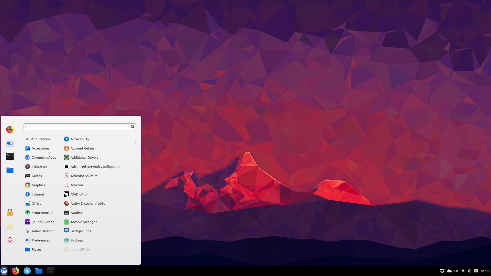

Введение в Linux
Linux — это ядро с открытым исходным кодом, которое служит основой операционной системы GNU/Linux (часто сокращается до просто «Linux»). Открытый исходный код позволяет любому человеку просматривать и изменять исходный код проекта. Это обеспечивает полную прозрачность, более высокую безопасность и большую творческую свободу для участников и пользователей. Linux свободен от шпионского ПО, раздувания и рекламы.
Linux распространяется в виде полных операционных систем, называемых дистрибутивами (distros). Каждый дистрибутив немного отличается, но все они используют ядро Linux в качестве своей основы. Большая часть программного обеспечения, предустановленного в Linux, также имеет открытый исходный код, что делает опыт использования системы Linux гораздо более настраиваемым и прозрачным, чем проприетарная природа Windows и программного обеспечения Windows.
Почему вам следует использовать Linux?
Linux — libre, или свободный (от слова «свобода»). Это означает, что Linux никоим образом не ограничивает вашу свободу; он полностью уважает выбор пользователя. Например, Linux не заставляет вас обновляться в неудобное время. Благодаря своей природе открытого исходного кода, Linux имеет самую высокую безопасность среди всех операционных систем, поскольку любая уязвимость будет обнаружена кем-то и исправлена. Другой компонент свободы, которую предоставляет Linux, связан с настройкой. Существует множество различных макетов пользовательского интерфейса, из которых вы можете выбирать. Они называются средами рабочего стола или DE. Три самых популярных DE — это Gnome, KDE Plasma и Cinnamon. Вот изображение моего Gnome DE, которое я настроил так, чтобы оно напоминало Mac OS, а также пример двух других DE, которые я упомянул.
нажмите на изображения, чтобы увеличить

Мой модифицированный рабочий стол Gnome

Пример KDE Plasma

Пример Cinnamon
В 2024 году существует множество дистрибутивов Linux, удобных для пользователя и очень стабильных. Linux Mint, Pop! OS и Debian — отличные места для начала работы с Linux. Нажмите на каждый логотип, чтобы узнать о нем больше, или нажмите кнопку «Далее».